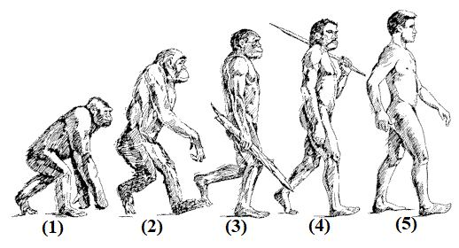
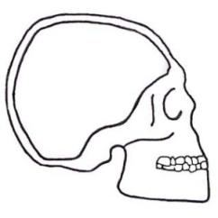
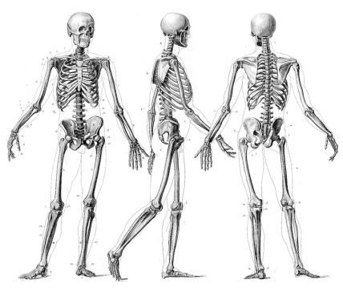
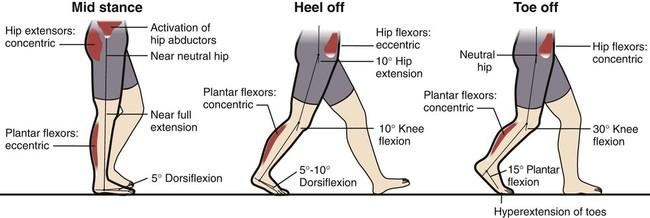
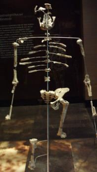
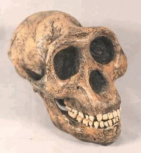
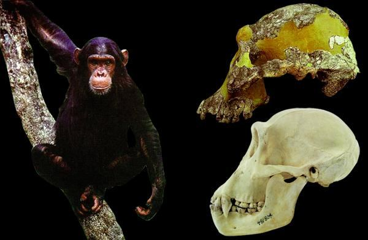
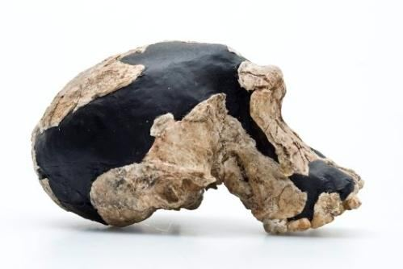

5a. Human Physical Structure
5 ক. মানুষের শারীরিক গঠন
I would like to discuss the physical structure of a human before delving into the species of the Hominid branch. We are often misled. Take a look at the following picture, which has been circulated widely. It illustrates, at least to a child, how humans are said to have evolved.
হোমিনিড শাখার প্রজাতি নিয়ে আলোচনা করার আগে আমি মানুষের শারীরিক গঠন নিয়ে আলোচনা করতে চাই। আমরা প্রায়ই বিভ্রান্ত হয়. নিচের ছবিটি দেখে নিন, যা ব্যাপকভাবে প্রচারিত হয়েছে। এটি ব্যাখ্যা করে, অন্তত একটি শিশুর কাছে, বলা হয় কিভাবে মানুষ বিবর্তিত হয়েছে।
FIGURE 24.32: Hominid Branch (Artistic Impression)

চিত্র 24_32 / Figure 24_32
চিত্র 24.32: হোমিনিড শাখা (শৈল্পিক ছাপ)
চিত্র 24_32 / Figure 24_32
But what is the reality? Number 1 is an ape (Gorilla). Numbers 2 and 3 depict false creatures. Numbers 4 and 5 represent humans—many like number 4 are found in South America, and many like number 5 are found in North America. Does this mean that North Americans evolved from South Americans? "To attempt to restore the soft parts is an even more hazardous undertaking. The lips, the eyes, the ears, and the nasal tip, leave no clues on the underlying bony parts. You can with equal facility model on a Neanderthaloid skull the features of a chimpanzee or the lineaments of a philosopher. These alleged restorations of ancient types of man have very little if any scientific value and are likely only to mislead the public...So, put not your trust in reconstructions." – UP FROM THE APE by EARNST A. HOOTEN, Harvard, ―And cover not Truth with falsehood, nor conceal the Truth when you know.‖ [Al Quran 2:42]
কিন্তু বাস্তবতা কি? নম্বর 1 একটি বানর (গরিলা)। সংখ্যা 2 এবং 3 মিথ্যা প্রাণীদের চিত্রিত করে। সংখ্যা 4 এবং 5 মানুষের প্রতিনিধিত্ব করে — 4 নম্বরের মতো অনেকগুলি দক্ষিণ আমেরিকাতে পাওয়া যায় এবং 5 নম্বরের মতো অনেকগুলি উত্তর আমেরিকায় পাওয়া যায়। এর মানে কি উত্তর আমেরিকানরা দক্ষিণ আমেরিকান থেকে বিবর্তিত হয়েছে? "নরম অংশগুলি পুনরুদ্ধার করার চেষ্টা করা আরও বেশি বিপজ্জনক উদ্যোগ। ঠোঁট, চোখ, কান এবং নাকের ডগা, অন্তর্নিহিত হাড়ের অংশগুলিতে কোনও চিহ্ন রেখে যায় না। আপনি নিয়ান্ডারথ্যালয়েডের মাথার খুলিতে সমান সুবিধার মডেলের সাথে শিম্পাঞ্জির বৈশিষ্ট্যগুলি বা এই ধরনের কথিত কোনো মানুষের বিশ্রামের কোন ধরনের কথিত বিশ্রাম আছে। বৈজ্ঞানিক মূল্য এবং সম্ভবত জনসাধারণকে বিভ্রান্ত করতে পারে...সুতরাং, পুনর্গঠনে আপনার আস্থা রাখবেন না।" - আর্নস্ট এ. হুটেন, হার্ভার্ড দ্বারা বানর থেকে উঠুন - এবং সত্যকে মিথ্যা দিয়ে ঢেকে দেবেন না এবং সত্যকে গোপন করবেন না যখন আপনি জানেন।" [আল কুরআন 2:42]
Human (so called modern human) skeleton has many unique features that negate their evolution from ape like creatures:
মানব (তথাকথিত আধুনিক মানব) কঙ্কালের অনেকগুলি অনন্য বৈশিষ্ট্য রয়েছে যা প্রাণীর মতো বনমানুষ থেকে তাদের বিবর্তনকে অস্বীকার করে:
FIGURE 24.33: Human Skull

চিত্র 24_33 / Figure 24_33
চিত্র 24.33: মানুষের মাথার খুলি
চিত্র 24_33 / Figure 24_33
Human cranial vault has high maximum breath with vertical forehead. A human have prominent nose and chin. A human have smaller jaw and teeth, so it needs smaller masticator muscle on delicate facial structure. The lighter face requires lighter neck muscle behind the point of balance of the skull. Therefore, area of head- neck attachment is nearer to chin.
হিউম্যান ক্র্যানিয়াল ভল্টের উল্লম্ব কপালের সাথে উচ্চ সর্বোচ্চ শ্বাস থাকে। একজন মানুষের বিশিষ্ট নাক এবং চিবুক আছে। একজন মানুষের ছোট চোয়াল এবং দাঁত থাকে, তাই মুখের সূক্ষ্ম গঠনে তার ছোট মাস্টিকেটর পেশীর প্রয়োজন হয়। হালকা মুখের জন্য মাথার খুলির ভারসাম্যের বিন্দুর পিছনে হালকা ঘাড়ের পেশী প্রয়োজন। অতএব, হেড-নেক সংযুক্তির এলাকা চিবুকের কাছাকাছি।
FIGURE 24.34: Human Vertebra Human skeleton shows a fully upright posture: Vertebral column shows two secondary curves when viewed from a side. These curves at the neck region and lumber region allow weight to be evenly distributed about the line of gravity, which passes vertically through the second vertebra, behind the rotation centers of the two hip joints. It permits pelvis to tip backward beyond the line of gravity and rest upon a strap like ligament. It is a sophisticated effort saving mechanism that allows muscles around it to relax during prolonged standing.

চিত্র 24_34 / Figure 24_34
চিত্র 24.34: মানব কশেরুকা মানব কঙ্কাল একটি সম্পূর্ণ খাড়া ভঙ্গি দেখায়: কশেরুকা কলাম দুটি গৌণ বক্ররেখা দেখায় যখন একটি দিক থেকে দেখা হয়। ঘাড়ের অঞ্চল এবং কাঠের অঞ্চলের এই বক্ররেখাগুলি ওজনকে সমানভাবে মাধ্যাকর্ষণ রেখার মধ্যে বিতরণ করার অনুমতি দেয়, যা দুটি নিতম্ব জয়েন্টের ঘূর্ণন কেন্দ্রের পিছনে দ্বিতীয় কশেরুকার মধ্য দিয়ে উল্লম্বভাবে যায়। এটি পেলভিসকে মাধ্যাকর্ষণ রেখার বাইরে পিছনের দিকে টিপ দিতে এবং লিগামেন্টের মতো একটি স্ট্র্যাপের উপর বিশ্রাম দেয়। এটি একটি পরিশীলিত প্রচেষ্টা সংরক্ষণ প্রক্রিয়া যা দীর্ঘক্ষণ দাঁড়িয়ে থাকার সময় চারপাশের পেশীগুলিকে শিথিল করতে দেয়।
চিত্র 24_34 / Figure 24_34
FIGURE 24.35: Human Skeleton

চিত্র 24_35 / Figure 24_35
চিত্র 24.35: মানব কঙ্কাল
চিত্র 24_35 / Figure 24_35
Ability to lock the knee rearward relaxes some surrounding muscles. Power to rise from seated position is provided by large buttock muscles. Pelvic tilt mechanism allows leg to swing clear of the ground during walking. In addition, such tilt must avoid wild side-to-side movement of the center of gravity. This is achieved by inclining the thighbones toward the midline and thus bringing the feet closer together.
হাঁটু পিছনের দিকে লক করার ক্ষমতা আশেপাশের কিছু পেশী শিথিল করে। বসা অবস্থান থেকে উঠার শক্তি বড় নিতম্বের পেশী দ্বারা সরবরাহ করা হয়। পেলভিক টিল্ট মেকানিজম হাঁটার সময় পাকে মাটি থেকে দুলতে দেয়। উপরন্তু, এই ধরনের কাত অবশ্যই মাধ্যাকর্ষণ কেন্দ্রের বন্য পার্শ্ব-থেকে-পাশে চলাচল এড়াতে হবে। এটি ঊরুর হাড়কে মধ্যরেখার দিকে ঝুঁকিয়ে এবং এইভাবে পা দুটিকে কাছাকাছি এনে অর্জন করা হয়।
FIGURE 24.36: Human Walking

চিত্র 24_36 / Figure 24_36
চিত্র 24.36: মানুষের হাঁটা
চিত্র 24_36 / Figure 24_36
Upper limbs provide dynamic balance of the body. Arms swing compensates twist of the body towards the side opposite to the advancing foot. Weight and force are transmitted to ground through a propulsive system of short levers that permits a heel-toe stride.
উপরের অঙ্গগুলি শরীরের গতিশীল ভারসাম্য প্রদান করে। অস্ত্রের দোল অগ্রসর পায়ের বিপরীত দিকে শরীরের মোচড়কে ক্ষতিপূরণ দেয়। ওজন এবং বল একটি সংক্ষিপ্ত লিভারের একটি প্রপালসিভ সিস্টেমের মাধ্যমে স্থলে প্রেরণ করা হয় যা একটি গোড়ালি-পায়ের অগ্রগতির অনুমতি দেয়।
5b. Australopithecus
5 খ. অস্ট্রালোপিথেকাস
The evolutionists suggest that Hominids evolved from Australopithecus. The genus (Australopithecus) comprises five species namely A. Afarensis, A. Africanus, A. Anamensis, A. Garhi, and A. Sediba. They suggest that the species lived in Eastern Africa 2 to 4 million years ago. No animal of this genus exists at present. In 1974, Donald Johanson, an Associate Professor of Case Western Reserve University, and his team discovered a fossil in Ethiopia. It was a piece of knee joint. The knee joint looked suitable for bipedal walking.
বিবর্তনবাদীরা পরামর্শ দেন যে হোমিনিড অস্ট্রালোপিথেকাস থেকে বিবর্তিত হয়েছে। প্রজাতি (অস্ট্রালোপিথেকাস) পাঁচটি প্রজাতি নিয়ে গঠিত যেমন A. Afarensis, A. Africanus, A. Anamensis, A. Garhi এবং A. Sediba। তারা পরামর্শ দেয় যে প্রজাতিটি পূর্ব আফ্রিকায় 2 থেকে 4 মিলিয়ন বছর আগে বাস করত। বর্তমানে এই গণের কোনো প্রাণীর অস্তিত্ব নেই। 1974 সালে, ডোনাল্ড জোহানসন, কেস ওয়েস্টার্ন রিজার্ভ ইউনিভার্সিটির একজন সহযোগী অধ্যাপক এবং তার দল ইথিওপিয়ায় একটি জীবাশ্ম আবিষ্কার করেন। এটি হাঁটু জয়েন্ট একটি টুকরা ছিল. হাঁটু জয়েন্ট দ্বিপদ হাঁটার জন্য উপযুক্ত লাগছিল।
Figure 24.37: The Knee Joint of Lucy (A. Afrensis)
চিত্র 24.37: লুসির হাঁটু জয়েন্ট (A. Afrensis)
But only a knee joint would not make news. So, they collected fossilized bones from wide surroundings and made an ape-like skeleton. They named the skeleton ―Lucy‖. Lucy represents the species of Australopithecus Afarensis. The height of Lucy is one meter.
কিন্তু শুধুমাত্র একটি হাঁটু জয়েন্ট খবর করবে না. সুতরাং, তারা বিস্তৃত পরিবেশ থেকে জীবাশ্মযুক্ত হাড় সংগ্রহ করে একটি বানরের মতো কঙ্কাল তৈরি করেছিল। তারা কঙ্কালটির নাম দিয়েছে ‘লুসি’। লুসি অস্ট্রালোপিথেকাস আফারেনসিসের প্রজাতির প্রতিনিধিত্ব করে। লুসির উচ্চতা এক মিটার।
FIGURE 24.38: Lucy Fossilized bones are scarce on the land. Despite extensive searching across a wide area, sixty percent of the bones, including the skull, could not be found. As a result, a skull of an Australopithecus was created and placed alongside that of Lucy.

চিত্র 24_38 / Figure 24_38
চিত্র 24.38: লুসি ফসিলাইজড হাড় ভূমিতে দুষ্প্রাপ্য। বিস্তীর্ণ এলাকা জুড়ে খোঁজাখুঁজি করেও মাথার খুলিসহ ষাট শতাংশ হাড় পাওয়া যায়নি। ফলস্বরূপ, একটি অস্ট্রালোপিথেকাসের একটি খুলি তৈরি করা হয়েছিল এবং লুসির পাশাপাশি স্থাপন করা হয়েছিল।
চিত্র 24_38 / Figure 24_38
FIGURE 24.39: Lucy Skull (Replica)

চিত্র 24_39 / Figure 24_39
চিত্র 24.39: লুসি স্কাল (প্রতিরূপ)
চিত্র 24_39 / Figure 24_39
Some Evolutionists consider Lucy as one of the vital missing links. The skeleton is remarkable for its knee joint, which shows that the animal could fully straighten its legs. It means that the animal could walk on two legs. Other parts of the skeleton are ape-like, which means that the animal was an ape that walked on two legs. Evolutionists argue that the bipedal walking of this ape triggered the evolution toward humans. It freed the animal from the bow-legged stride that limits modern apes, making them incapable of walking on two legs for more than a few steps. This limitation keeps them confined to dense forests, where moving through the branches of trees is possible. The age of the fossil (knee joint) could not be determined in the 70s and 80s, yet it was placed in the genus Australopithecus amid much controversy. Later, in 1992, the age was assessed by dating the volcanic ash layers found beneath Lucy's site. The samples were tested at the Institute of Human Origins, founded by none other than Donald Johanson. The bones of Lucy belong to different animals from different periods. Those devoted to Biological Evolution reconstructed her skeleton using fragments collected from a wide area. In reality, the complete skeleton was assembled to complement the knee joint, as it appeared suitable for bipedal walking. "A great legend has grown up to plague both paleontologists and anthropologists. It is that one of men can take a tooth or a small and broken piece of bone, gaze at it, and pass his hand over his forehead once or twice, and then take a sheet of paper and draw a picture of what the whole animal looked like as it tramped the Tertiary terrain. If this were quite true, the anthropologists would make the F.B.I. look like a troop of Boy Scouts." – MANKIND SO FAR by W. HOWELLS, Harvard
কিছু বিবর্তনবাদী লুসিকে গুরুত্বপূর্ণ অনুপস্থিত লিঙ্কগুলির মধ্যে একটি হিসাবে বিবেচনা করে। কঙ্কালটি তার হাঁটুর জয়েন্টের জন্য অসাধারণ, যা দেখায় যে প্রাণীটি তার পা পুরোপুরি সোজা করতে পারে। মানে প্রাণীটি দুই পায়ে হাঁটতে পারে। কঙ্কালের অন্যান্য অংশগুলি বানরের মতো, যার মানে প্রাণীটি একটি বানর ছিল যা দুটি পায়ে হাঁটত। বিবর্তনবাদীরা যুক্তি দেন যে এই বানরের দ্বিপাক্ষিক হাঁটা মানুষের দিকে বিবর্তনের সূত্রপাত করেছে। এটি প্রাণীটিকে ধনুক-পায়ের অগ্রগতি থেকে মুক্ত করে যা আধুনিক বনমানুষকে সীমাবদ্ধ করে, তাদের কয়েক ধাপের বেশি দুই পায়ে হাঁটতে অক্ষম করে তোলে। এই সীমাবদ্ধতা তাদের ঘন বনের মধ্যে সীমাবদ্ধ রাখে, যেখানে গাছের ডালপালা দিয়ে চলাচল করা সম্ভব। জীবাশ্মের বয়স (হাঁটুর জয়েন্ট) 70 এবং 80 এর দশকে নির্ধারণ করা যায়নি, তবুও অনেক বিতর্কের মধ্যে এটিকে অস্ট্রালোপিথেকাস গণে রাখা হয়েছিল। পরে, 1992 সালে, লুসির সাইটের নীচে পাওয়া আগ্নেয়গিরির ছাই স্তরগুলির ডেটিং করে বয়স নির্ধারণ করা হয়েছিল। নমুনাগুলি ইনস্টিটিউট অফ হিউম্যান অরিজিন-এ পরীক্ষা করা হয়েছিল, যা ডোনাল্ড জোহানসন ছাড়া অন্য কেউ নয়। লুসির হাড় বিভিন্ন সময়ের বিভিন্ন প্রাণীর অন্তর্গত। জৈবিক বিবর্তনের প্রতি নিবেদিত ব্যক্তিরা বিস্তৃত এলাকা থেকে সংগৃহীত টুকরা ব্যবহার করে তার কঙ্কাল পুনর্গঠন করেছিলেন। বাস্তবে, সম্পূর্ণ কঙ্কালটি হাঁটু জয়েন্টের পরিপূরক করার জন্য একত্রিত করা হয়েছিল, কারণ এটি দ্বিপদ হাঁটার জন্য উপযুক্ত বলে মনে হয়েছিল। "একটি মহান কিংবদন্তি জীবাশ্মবিদ এবং নৃতত্ত্ববিদ উভয়কেই প্লেগ করার জন্য বড় হয়ে উঠেছে। এটি হল যে পুরুষদের মধ্যে একজন একটি দাঁত বা একটি ছোট এবং ভাঙা হাড়ের টুকরো নিতে পারে, এটির দিকে তাকাতে পারে এবং তার কপালের উপর একবার বা দুবার হাত দিতে পারে এবং তারপরে কাগজের একটি শীট নিয়ে পুরো প্রাণীটি কেমন ছিল তার একটি ছবি আঁকতে পারে যখন এটি এই টেরিথ্রোলোজিস্টকে টেরাপোলজিস্টকে মাড়িয়েছিল, তাহলে এটি সত্যিকারের টেরিপোলজিস্টকে পরিণত করবে। F.B.I দেখতে বয় স্কাউটদের একটা ট্রুপের মতো।" - ম্যানকাইন্ড এখন পর্যন্ত ডব্লিউ হাওয়েলস, হার্ভার্ড দ্বারা
A study conducted in 2016 suggests that A. afarensis was a tree-dwelling creature: ―To make inferences about how Lucy‘s bones were used in day to day life, the researchers analyzed 3-D digital models of bones built from scans of the fossil. Bones, like drinking straws, are hollow, and if you were to slice them horizontally you‘d have a set of bone bangles. The width of each one of those bangles at particular parts of the bone indicate its strength. This width is called cortical thickness. For example, a professional tennis player‘s racket arm bone has a larger cortical thickness than that of the other arm. Lucy‘s bones were pretty thick.‖ – JOANNA KLEIN NOV 30, 2016 The New York Times
2016 সালে পরিচালিত একটি সমীক্ষায় পরামর্শ দেওয়া হয়েছে যে A. afarensis একটি গাছে বসবাসকারী প্রাণী ছিল: - প্রতিদিনের জীবনে লুসির হাড়গুলি কীভাবে ব্যবহার করা হয়েছিল সে সম্পর্কে অনুমান করতে, গবেষকরা জীবাশ্মের স্ক্যান থেকে তৈরি হাড়ের 3-ডি ডিজিটাল মডেলগুলি বিশ্লেষণ করেছেন৷ হাড়গুলি, পানের খড়ের মতো, ফাঁপা, এবং আপনি যদি সেগুলিকে অনুভূমিকভাবে টুকরো টুকরো করে ফেলতেন তবে আপনার কাছে এক সেট হাড়ের চুড়ি থাকবে। হাড়ের নির্দিষ্ট অংশে প্রতিটি চুড়ির প্রস্থ তার শক্তি নির্দেশ করে। এই প্রস্থকে বলা হয় কর্টিকাল বেধ। উদাহরণস্বরূপ, একজন পেশাদার টেনিস খেলোয়াড়ের র্যাকেটের হাতের হাড় অন্য বাহুর চেয়ে বড় কর্টিকাল বেধ থাকে। লুসির হাড়গুলি বেশ মোটা ছিল। - জোয়ানা ক্লেইন 30 নভেম্বর, 2016 নিউ ইয়র্ক টাইমস
By comparing CT scans with those of modern primates and humans, scientists discovered that Lucy‘s upper limb strength was more similar to that of a chimpanzee than a human. Additionally, the skull of A. afarensis (Lucy‘s species) closely resembles that of modern chimpanzees:
আধুনিক প্রাইমেট এবং মানুষের সাথে সিটি স্ক্যানের তুলনা করে, বিজ্ঞানীরা আবিষ্কার করেছেন যে লুসির উপরের অঙ্গের শক্তি মানুষের তুলনায় শিম্পাঞ্জির মতো বেশি। উপরন্তু, A. afarensis (Lucy's species) এর মাথার খুলি আধুনিক শিম্পাঞ্জিদের সাথে ঘনিষ্ঠভাবে সাদৃশ্যপূর্ণ:
FIGURE 24.40: The upper skull belongs to an A. Afarensis (AL 444-2), the lower skull belongs to a modern Chimpanzee

চিত্র 24_40 / Figure 24_40
চিত্র 24.40: উপরের খুলিটি একটি A. Afarensis (AL 444-2) এর, নীচের খুলিটি একটি আধুনিক শিম্পাঞ্জির অন্তর্গত
চিত্র 24_40 / Figure 24_40
―The very clear similarity between the skull of A. Afarensis (AL 444-2) and Modern Chimpanzees is an evident indication that A. Afarensis was an ordinary species of ape with no human feature‖ – Adnan Oktar (Harun Yahya). Thus, a knee joint showing signs of bipedal walking is falsely attached to a fabricated skeleton of A. afarensis and named Lucy. No DNA analysis has been conducted on Lucy‘s knee joint, which could have belonged to the front leg of a four-footed animal, as four-footed animals can fully straighten their front legs. Therefore, Lucy does not fill the missing link. An animal cannot be both tree-dwelling and bipedal at the same time. Tree-dwelling requires specialized hands, pelvis, legs, and feet adapted for grasping branches. It also demands a high level of skill to swing through the branches, a skill that monkeys and apes are genetically equipped with. If a forest were to become a savanna, the apes would either migrate or die, because surviving in a savanna requires high land-living efficiency, including the ability to run fast, which demands strong hind legs or a robust body to fight predators, or a small body to hide. Therefore, a savanna would not give rise to a bipedal creature like a human. Evolutionists suggest that the descendants of A. afarensis were A. africanus, with overall physical structures that were similar. However, no knee joints from A. africanus have been found so far.
"এ. আফারেনসিস (AL 444-2) এবং আধুনিক শিম্পাঞ্জির খুলির মধ্যে খুব স্পষ্ট মিল একটি সুস্পষ্ট ইঙ্গিত যে A. Afarensis ছিল একটি সাধারণ প্রজাতির বানর যার কোনো মানবিক বৈশিষ্ট্য নেই" - আদনান ওকতার (হারুন ইয়াহিয়া)। এইভাবে, একটি হাঁটু জয়েন্ট যা দ্বিপাক্ষিক হাঁটার লক্ষণ দেখাচ্ছে তা মিথ্যাভাবে এ. অ্যাফারেনসিসের একটি গড়া কঙ্কালের সাথে সংযুক্ত করা হয়েছে এবং যার নাম লুসি। লুসির হাঁটুর জয়েন্টে কোনও ডিএনএ বিশ্লেষণ করা হয়নি, যা একটি চার-পায়ের প্রাণীর সামনের পায়ের অন্তর্গত হতে পারে, কারণ চার-পাওয়ালা প্রাণী তাদের সামনের পা পুরোপুরি সোজা করতে পারে। অতএব, লুসি অনুপস্থিত লিঙ্ক পূরণ না. একটি প্রাণী একই সময়ে বৃক্ষ-নিবাস এবং দ্বিপদ উভয়ই হতে পারে না। বৃক্ষ-নিবাসের জন্য বিশেষ হাত, শ্রোণী, পা এবং শাখাগুলি আঁকড়ে ধরার জন্য অভিযোজিত পা প্রয়োজন। এটি শাখাগুলির মধ্য দিয়ে দোলানোর জন্য উচ্চ স্তরের দক্ষতারও দাবি করে, এমন একটি দক্ষতা যা বানর এবং বনমানুষ জেনেটিক্যালি সজ্জিত। যদি একটি বন একটি সাভানা হয়ে যায়, তাহলে বনমানুষগুলি হয় স্থানান্তরিত হবে বা মারা যাবে, কারণ একটি সাভানায় বেঁচে থাকার জন্য উচ্চ ভূমি-জীবিত দক্ষতার প্রয়োজন, যার মধ্যে দ্রুত দৌড়ানোর ক্ষমতা রয়েছে, যা শিকারীদের বিরুদ্ধে লড়াই করার জন্য শক্তিশালী পিছনের পা বা একটি শক্তিশালী শরীর, বা লুকানোর জন্য একটি ছোট দেহের প্রয়োজন। অতএব, একটি সাভানা মানুষের মতো দ্বিপদ প্রাণীর জন্ম দেবে না। বিবর্তনবাদীরা পরামর্শ দেন যে A. afarensis-এর বংশধররা A. africanus, যার সামগ্রিক শারীরিক গঠন একই রকম ছিল। যাইহোক, A. africanus থেকে এখন পর্যন্ত কোন হাঁটু জয়েন্ট পাওয়া যায়নি।
5c. Homo Habilis
5 গ. হোমো হ্যাবিলিস
Evolutionists suggest that Australopithecus africanus evolved into Homo habilis. Homo habilis is a species in the genus Homo and is notable for its increased cranial capacity, which was about 640 cc in volume. FIGURE 24.41: Homo Habilis Skull

চিত্র 24_41 / Figure 24_41
বিবর্তনবাদীরা পরামর্শ দেন যে অস্ট্রালোপিথেকাস আফ্রিকানাস হোমো হ্যাবিলিসে বিবর্তিত হয়েছে। হোমো হ্যাবিলিস হল হোমো গণের একটি প্রজাতি এবং এর বর্ধিত ক্র্যানিয়াল ক্ষমতার জন্য উল্লেখযোগ্য, যার আয়তন ছিল প্রায় 640 সিসি। চিত্র 24.41: হোমো হ্যাবিলিস স্কাল
চিত্র 24_41 / Figure 24_41